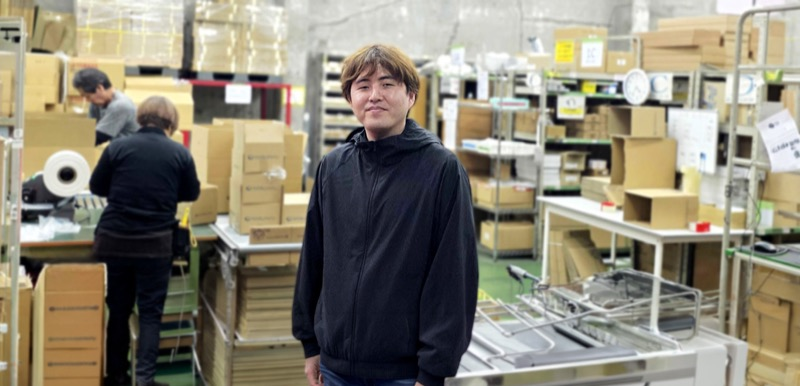

INTERVIEW 01
現場の声を仕組みに変え、鋭い「先読み」で物流の心臓部を支える
01「任される喜び」が、正社員への決意に変わった
もともと「人やモノの流れを支える仕事」に興味があり、当社にはアルバイトとして入社しました。約3年間、現場で経験を積む中で大きな転機となったのは、現場の指揮を執るポジションを任されたことです。体制変更に伴い、社員の方から「K.I.さんにやってほしい」と声をかけていただきました。任せてもらえることが純粋に嬉しく、二つ返事で「はい」と答えました。現場を動かす楽しさと責任の大きさを実感したことで、「ここで腰を据えてみよう」と正社員として働くことを決意しました。
02現場目線を仕組みに変え、チームで「最善」を追求する
現在は第1ロジスティクスセンターのセンター長として、入出荷の進捗管理や人員配置、作業効率の改善、安全管理などを一手に担っています。私が最も大切にしているのは「先を読むこと」です。1週間分の出荷予測データに基づき、物量が多い日は事前にスタッフのシフトを調整し、逆に少ない時間は設備のメンテナンスに充てるなど、一歩先回りして無駄のない現場運営を心掛けています。また、現場の声を大切にする社風を活かし、朝礼の順序を見直して情報伝達をスムーズにするなど、仕組みの改善にも取り組んでいます。自分のアイデアで現場が目に見えて良くなっていく実感は、この仕事ならではの醍醐味です。出荷件数が多い過酷な日でも、他拠点のメンバーと協力して全ての荷物を出し切れた瞬間には、チーム一体となった大きな達成感があります。
03マネジメントを極め、会社全体の品質を底上げしたい
今後の目標は、さらなる生産性向上を実現し、ミスゼロの現場運営を確立することです。将来的には第1ロジだけでなく、複数拠点を統括できるマネジメント力を身につけ、会社全体の物流品質向上に貢献したいと考えています。そのために、現在はデータ分析力や人材育成スキルの向上に注力しています。新しく入ったスタッフが、数日後には自発的に動けるようになる姿を見るのは、今の私にとって大きなやりがいです。休日は大好きな野球チームの応援や趣味の映画鑑賞でしっかりリフレッシュし、オンとオフのメリハリを大切にしながら、理想の物流現場を追求し続けていきます。
1日のスケジュール
- 出社、朝礼、進捗確認
- 現場巡回、作業指示
- 入荷対応、状況確認
- 昼食、休憩
- 出荷進捗確認、本社からの依頼対応
- 現場対応（物量変動に応じた調整）
- 翌日の人員調整、シフト確認
- 進捗最終確認、最終出荷作業
- 退社